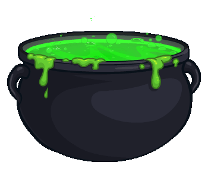
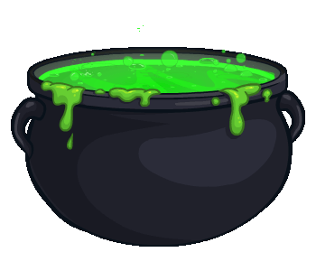

Neopets.com is a browser-based game set in a virtual world, Neopia, where you can create or adopt creatures called Neopets. You can feed these pets, customise their appearance, and train them to fight NPCs or other users' pets in the battledome. You can also play games; buy, sell, and collect virtual items such as stamps; chat and trade with other users; and participate in contests, to list a few of the many activities available!
History
The site came online November 15th, 1999, founded by Adam Powell and Donna Williams, two students at the University of Nottingham. It quickly became popular with other students. By January 2000, businessman Doug Dohring became CEO of Neopets Inc. Dohring turned it into a profitable company through the use of "integrated advertising", for example, adding promotional games from various companies to the site. Dohring and many of the people he brought to the company were also Scientologists. He ran the company following a business model from L. Ron Hubbard and apparently attempted to add info about Scientology to the site but was, thankfully, unsuccessful. More info on this is available in this article. The site reached its height in popularity in the mid-2000s, with around 35 million users by 2005. During this time they began selling real-life merchandise like stuffed toys, trading cards, and even a monthly magazine.
Viacom purchased the site in 2005, and Adam and Donna left, unhappy with the direction the site was headed. In 2007 the site was completely redesigned, and users were now able to customise their pets with clothing and accessories. They also introduced Neocash, which was bought with real money and required for many of the customisation options. The poses and art style for each Neopet were changed to better accommodate customisation. Many were upset at these changes, especially the change to the pets, which made them more uniform and took away unique poses and expressions. For a short time after the redesign, users could choose to keep the original art for certain existing Neopets that were changed significantly in the new style. If you chose to convert the pet or created a new pet, it could not be unconverted, so unconverted pets became highly sought after. The site went through some more ownership changes in the 2010s. I know very little about what was going on between 2011-2020 as I wasn't really playing.

Support for Adobe Flash, used by most games on Neopets, stopped at the end of 2020. The Neopets Team worked to convert games to HTML5 but didn't mange to update them all, leaving many broken for some time. However, they were eventually able to use the flash emulator, Ruffle, to get all of the games working. At this time they also began switching the site to a more mobile-friendly layout, though at the time of writing, much of the site has still not been converted to the new layout. In 2021 Neopets announced The Neopets Metaverse, an NFT ...game? Some of the NFTs made were found to have come from Dress to Impress, a fansite, without their permission. This project was met with a massive amount of backlash and cancelled in 2023.
Also in 2023 Neopets yet again changed ownership, this time becoming an independant company. The Neopets Team revealed that the company had been running at a loss for the last several years and need to find new ways of making money. They released two new mobile games, added new benefits for Neopets Premium subscribers, and started selling new physical merch. In 2024 Neopets introduced pet styles, a way to change converted Neopet art back to their old unconverted poses and even added new poses for pets and colours that didn't exist pre-conversion. Attempts were also made to reduce the inflation that had devolped in the Neopian economy by adding new ways to get rare items.
While it lost popularity in the 2010s, the site has had a resurgence in the 2020s as older users have come back due to nostalgia. I've even encountered a few younger people who were too young to play (or not even born yet) when Neopets was at its height and are just discovering it now!

Neopets Facts:
Currently, there are 56 different species of Neopet available.
The most popular is the Shoyru, with over 17.6 million created. Kacheeks are a close second at over 17.4 million created.
The most recently added Neopet is the Varwolf, originally created for an April fools prank in 2005, they were released to premium users March 26th, 2025 and are set to be released to all users in July.
 
